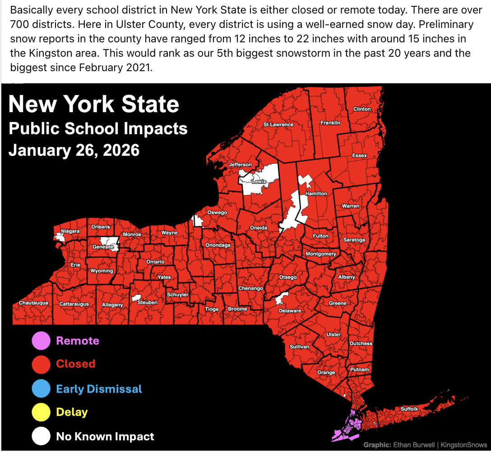

Snowstorm Ranks Top-10
School Forecast
for Tuesday January 27
Last updated: 5:30PM Monday January 24, 2025
| 50% (Medium) |
|---|
| 30% (Low) |
|---|
| 0% (Nope) |
|---|
___________________
5:30 PM Monday:
Roughly 15 inches of snow fell in Kingston during this storm. This ranks as the biggest storm since February 2021 and ties the December 2020 storm as our 5th biggest snowstorm in the past two decades. Kingston issued a delay the day after the 2020 storm ended, and this is the likely outcome for tomorrow's schools. That said, some storms of similar size have resulted in snow days the day after the storm ended, and a smaller number have had no school impacts the day after the snow ended. The updated probabilities reflect these past storms.
___________________
12:00 PM Monday:

Stay warm!
-Ethan 🙂
KingstonSnows | Kingston, New York
Website built by Ethan Burwell